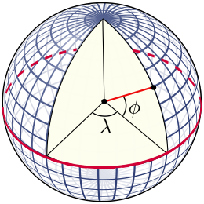

Introduction
Well...
Imagine combining the thrill of stargazing with the satisfaction of building something from scratch. That's exactly what I've set out to do.
I've embarked on an exciting journey to master the Rust programming language through a hands-on, real-world project. My mission? To develop a telescope mount controller, step by step, as I grow my Rust skills. The heart of this project will be an ESP32-based 3D printer board, which will control the stepper motors responsible for positioning the mount.

But why take on such a challenge? Well, my recent exposure to Rust programming on ESP32s has ignited a passion to dive deeper into this powerful language. Simultaneously, I'm eager to explore the capabilities of the ESP32, particularly in the context of telescope mount control. As an aspiring amateur astronomer, I'm keen to elevate my stargazing game, but I'm not content with simply purchasing off-the-shelf solutions. Ultimately, I want pin-point stars in my astrophotography.
Sure, I could buy a ready-made mount, load up on software, and start observing right away. But where's the fun in that? I'm after the thrill of understanding the intricacies, of building something with my own hands (and code). Plus, let's be honest - those high-end astronomy mounts come with price tags that might make the Chief Financial Officer of my household raise an eyebrow or two.
At its core, an astronomy mount's job is to move along two axes to point at specific areas of the night sky. Sounds simple enough, right? So I thought to myself, "Why not build one?" After all, the basic premise doesn't seem too complex. How hard could it be?
Join me on this adventure as I attempt to marry the worlds of Rust programming, ESP32 microcontrollers, and amateur astronomy. It's going to be a learning experience, a test of perseverance, and hopefully, a whole lot of fun. Let's see if we can reach for the stars - both literally and figuratively!

üí°TIP - I asked MetaAI to generate this image with this prompt "imagine a guy sitting in a lawn chair, drinking a beer, and a telescope beside him pointed upwards into the night sky, filled with galaxies". I think it's a great visual of what I'm trying to accomplish. üëç
Note: This is a work in progress. I'm still working on the project, so expect some rough edges. Also, I've created this book (using mdbook) as a way to capture my thoughts on solving some of these challenges along the way. I will/may miss stuff that the Rust Book may cover, so please feel free to check it out. I've realized i'm jumping all over the place, so, i'd like to call out that perhaps the end result doesn't actually show how i got there.
Further, this book is really just a reference for me, so I'm not going to spend a lot of time on it. I'm going to try to keep it updated as I go along, but I'm not going to be a stickler for keeping it up to date in sync with the code.
I am NOT a professional programmer! I wanted to learn Rust, and I'm hoping that this project will help me do that. Sure there are better ways to do something, but my mantra right now is "Git-R-Done". I can work out later how to improve on this project.
Chapter 1
Data baby!! DATA...
erDiagram
Coordinate ||--|{ RightAscension : hours
Coordinate ||--|{ Declination : degrees
Current only one to zero or more Coordinate : f64
Target only one to zero or more Coordinate : f64
Home only one to zero or more Coordinate : f64
Park only one to zero or more Coordinate : f64
Current only one to zero or more Motor : f64
Target only one to zero or more Motor : f64
Home only one to zero or more Motor : f64
Park only one to zero or more Motor : f64
Coordinate {
f64 RightAscension
f64 Declination
}
RightAscension {
i32 hours
i32 minutes
f64 seconds
}
Declination {
i32 degrees
i32 arcminutes
f64 arcseconds
}
Motor {
i32 position
i32 direction
}
1.1 - Terminology
This project is astronomy-based, so let's find/define what some of the usual terms mean, to give us a better insight as to what exactly we are dealing with. It's not a comprehensive list, but it's a good start.
Right Ascension (RA) is the celestial equivalent of longitude on Earth. It is the angular distance measured eastward along the celestial equator from the Sun's position at the vernal equinox (the First Point of Aries) to the hour circle passing through the celestial object in question. RA is measured in hours (h), minutes (m), and seconds (s), with 24 hours being a full circle or 360 degrees.
Declination (Dec) is the celestial equivalent of latitude on Earth. It is the angular distance of a celestial object north or south of the celestial equator, measured in degrees (°), minutes ('), and seconds ("). Declination ranges from +90° at the north celestial pole to -90° at the south celestial pole, with 0° being the celestial equator.
Together, Right Ascension and Declination form the equatorial coordinate system used to specify the precise location of stars, planets, and other celestial objects on the celestial sphere.
A prime meridian is an arbitrarily-chosen meridian (a line of longitude) in a geographic coordinate system at which longitude is defined to be 0°. Together, a prime meridian and its anti-meridian (the 180th meridian in a 360°-system) form a great circle. This great circle divides a spheroid, like Earth, into two hemispheres: the Eastern Hemisphere and the Western Hemisphere (for an east-west notational system). For Earth's prime meridian, various conventions have been used or advocated in different regions throughout history. Earth's current international standard prime meridian is the IERS Reference Meridian. It is derived, but differs slightly, from the Greenwich Meridian, the previous standard.
Decimal degrees (DD) is a notation for expressing latitude and longitude geographic coordinates as decimal fractions of a degree. DD are used in many geographic information systems (GIS), web mapping applications such as OpenStreetMap, and GPS devices. Decimal degrees are an alternative to using sexagesimal degrees (degrees, minutes, and seconds - DMS notation). As with latitude and longitude, the values are bounded by ±90° and ±180° respectively.
1.2 - Location & Time
Coordinate systems
Longitude and Latitude
The latitude (abbreviation: Lat., ϕ, or phi) of a point on Earth's surface is the angle between the equatorial plane and the straight line that passes through that point and through (or close to) the center of the Earth.[note 2] Lines joining points of the same latitude trace circles on the surface of Earth called parallels, as they are parallel to the Equator and to each other. The North Pole is 90° N; the South Pole is 90° S. The 0° parallel of latitude is designated the Equator, the fundamental plane of all geographic coordinate systems. The Equator divides the globe into Northern and Southern Hemispheres.
The longitude (abbreviation: Long., λ, or lambda) of a point on Earth's surface is the angle east or west of a reference meridian to another meridian that passes through that point. All meridians are halves of great ellipses (often called great circles), which converge at the North and South Poles. The meridian of the British Royal Observatory in Greenwich, in southeast London, England, is the international prime meridian, although some organizations—such as the French Institut national de l'information géographique et forestière—continue to use other meridians for internal purposes. The prime meridian determines the proper Eastern and Western Hemispheres

Right Ascension & Declination
Right Ascension (RA) is the celestial equivalent of longitude on Earth. It is the angular distance measured eastward along the celestial equator from the Sun's position at the vernal equinox (the First Point of Aries) to the hour circle passing through the celestial object in question. RA is measured in hours (h), minutes (m), and seconds (s), with 24 hours being a full circle or 360 degrees.
Declination (Dec) is the celestial equivalent of latitude on Earth. It is the angular distance of a celestial object north or south of the celestial equator, measured in degrees (°), minutes ('), and seconds ("). Declination ranges from +90° at the north celestial pole to -90° at the south celestial pole, with 0° being the celestial equator.
Together, Right Ascension and Declination form the equatorial coordinate system used to specify the precise location of stars, planets, and other celestial objects on the celestial sphere.
Astronomy catalogues use the International Celestial Reference Frame (ICRF) to specify the location of celestial objects. The ICRF is a coordinate system based on the Equatorial Coordinate System (ECEF) and the International Terrestrial Reference System (ITRS). The ICRF is a right-handed coordinate system, with the origin at the centre of the Earth's equator at the vernal equinox (the First Point of Aries), and the axes oriented along the equator and the ecliptic plane. The ICRF is a spherical coordinate system, with a radius of 6378.137 km.
As an example, Messier 31 (M31), better known as the Andromeda Galaxy, is a large spiral galaxy located in the constellation Andromeda. Lying at a distance of 2.54 million light years from Earth, the Andromeda Galaxy is the nearest major galaxy to our own. It is on a collision course with our home galaxy, the Milky Way. Messier 31 has an apparent magnitude of 3.44. Its designation in the New General Catalogue is NGC 224. It's coordinates are:
RA: 00h 42m 44s Dec: +41° 16' 09"
These coordinates are given in the J2000 epoch. It's worth noting that there are slight variations in the precise coordinates across different sources, which is common for large extended objects like galaxies. For example:
- One source lists RA: 00h 42' 58", Dec: +41° 16' 32"
- Another gives RA: 00h 41.8m, Dec: +41° 16'
These minor differences are likely due to variations in measurement techniques or the specific part of the galaxy being referenced as the center point. However, all sources agree on the general location in the sky, placing Messier 31 in the constellation Andromeda.

So, provided we know where we are on the Earth (Latitude/Longitude), we should be able to find and point to the coordinates of any celestial object.
That's cool!! üÜí "Close only counts in horseshoes and hand grenades" - Anonymous
Prime Meridian and Local Meridian
Prime Meridian - A prime meridian is an arbitrarily-chosen meridian (a line of longitude) in a geographic coordinate system at which longitude is defined to be 0°. Together, a prime meridian and its anti-meridian (the 180th meridian in a 360°-system) form a great circle. This great circle divides a spheroid, like Earth, into two hemispheres: the Eastern Hemisphere and the Western Hemisphere (for an east-west notational system). For Earth's prime meridian, various conventions have been used or advocated in different regions throughout history. Earth's current international standard prime meridian is the IERS Reference Meridian. It is derived, but differs slightly, from the Greenwich Meridian, the previous standard.
Local Meridian - A local meridian is a meridian that is used to specify the longitude of a celestial object. For example, the local meridian of the Greenwich observatory is the Greenwich meridian, which is the international standard meridian for the United Kingdom. Based on your location, the local meridian can be different from the international standard meridian, and is often referred to as the observatory meridian.

Time Systems
Fundamental Concepts
Time is a measure of the duration between events. In scientific contexts, it's typically measured in seconds (s), though larger units like minutes (m), hours (h), days (d), weeks (w), and years (y) are also used.
Julian Date (JD) is a continuous count of days and fractions thereof from the beginning of the Julian Period, starting at noon Universal Time on January 1, 4713 BCE (on the Julian calendar). It's widely used in astronomy for its simplicity in calculating time intervals.
Gregorian Calendar is the internationally accepted civil calendar. It was introduced by Pope Gregory XIII in 1582 as a reform of the Julian calendar. It has 12 months of varying lengths, with a leap year every four years (with some exceptions).
J2000.0 refers to the standard epoch used in astronomy, corresponding to 12:00 Terrestrial Time (TT) on January 1, 2000 in the Gregorian calendar. This equates to JD 2451545.0 (TT).
Time Scales
Universal Time (UT) is a time scale based on the Earth's rotation. There are several versions: UT0, UT1, and UT2, with UT1 being the principal form directly obtained from observations.
Coordinated Universal Time (UTC) is the primary time standard by which the world regulates clocks and time. It's based on International Atomic Time (TAI) with leap seconds added to keep it close to UT1.
International Atomic Time (TAI) is a highly precise atomic coordinate time standard based on the SI second. It's the basis for other time scales.
Terrestrial Time (TT) is a theoretical ideal time scale for observations from the surface of the Earth. It's essentially TAI + 32.184 seconds.
Barycentric Dynamical Time (TDB) is a relativistic time scale intended for astronomical use, particularly for solar system ephemerides.
GPS Time is the time scale used by the Global Positioning System. It's ahead of TAI by 19 seconds and does not include leap seconds.
üì° We'll be using a GPS to establish the time reference for our mount.
Astronomical Time Concepts
Sidereal Time is time measured by the apparent diurnal motion of the vernal equinox. A sidereal day is slightly shorter than a solar day.
Local Sidereal Time (LST) is sidereal time for a specific longitude on Earth. It's crucial for determining which celestial objects are observable at a given location and time. Here's an online calculator Sidereal Time
Vernal Equinox is one of two points where the celestial equator intersects the ecliptic. It's used as a reference point in several coordinate systems.
Specialized Time Systems
Unix Time (or POSIX time) is a system for describing instants in time, defined as the number of seconds that have elapsed since 00:00:00 UTC on 1 January 1970 (the Unix Epoch), not counting leap seconds.
Epoch in computing and astronomy often refers to a specific point in time used as a reference for time-dependent calculations.
Topocentric Time isn't a standard term, but in astronomy, "topocentric" refers to a coordinate system centered on a specific location on Earth's surface, as opposed to geocentric (Earth-centered) or heliocentric (Sun-centered) systems.
1.3 - Theory of operation
Theory of Operation: Astronomical Mount
An astronomical mount is a crucial piece of equipment in observational astronomy, designed to support and precisely move telescopes to track celestial objects. The primary function of these mounts is to counteract Earth's rotation, allowing for extended observation or astrophotography sessions. Here's how they work:
Basic Principles
-
Axes of Rotation: Astronomical mounts typically have two axes of rotation:
- Right Ascension (RA) Axis: Aligned parallel to Earth's rotational axis
- Declination (Dec) Axis: Perpendicular to the RA axis
-
Tracking Motion: The mount moves primarily around the RA axis to follow celestial objects as they appear to move across the sky due to Earth's rotation.
-
Pointing: Adjustments to both RA and Dec axes allow the telescope to point at specific celestial coordinates.
Types of Astronomical Mounts
Equatorial Mounts
Equatorial mounts are designed with one axis (the Right Ascension or RA axis) parallel to Earth's rotational axis. This alignment allows the mount to track celestial objects by rotating around a single axis, counteracting Earth's rotation.
-
Advantages:
- Simplifies tracking, requiring movement only around the RA axis.
- Ideal for long-exposure astrophotography due to reduced field rotation.
-
Disadvantages:
- Requires precise polar alignment.
- Often bulkier and less portable compared to other types.
Alt-Azimuth (Alt-Az) Mounts
Alt-azimuth mounts have two perpendicular axes: one for altitude (vertical movement) and another for azimuth (horizontal movement).
-
Advantages:
- Simpler design and generally more compact.
- Easier to set up, with no need for polar alignment.
-
Disadvantages:
- Requires simultaneous movement of both axes for tracking.
- Field rotation can be an issue during long-exposure astrophotography.
Other Types of Mounts
Dobsonian Mounts
A type of alt-azimuth mount, Dobsonian mounts are known for their simplicity and stability, often used with large Newtonian telescopes.
-
Advantages:
- Very stable and easy to use.
- Cost-effective, ideal for large apertures.
-
Disadvantages:
- Not suitable for astrophotography without additional tracking systems.
Fork Mounts
Fork mounts can be either alt-azimuth or equatorial (with a wedge). They consist of a fork-like structure that holds the telescope.
-
Advantages:
- Compact and often used in portable telescopes.
- Can be converted to equatorial with a wedge for better tracking.
-
Disadvantages:
- Limited to smaller telescopes due to structural constraints.
Polar Mounts
A polar mount is a type of equatorial mount that is precisely aligned with the Earth's rotational axis. This alignment allows for accurate tracking of celestial objects with minimal adjustments.
German Equatorial Mount (GEM) Polar Mount
A German Equatorial Mount (GEM) is a specific type of equatorial mount characterized by its counterweight system to balance the telescope. When aligned with the celestial pole, it is referred to as a "GEM Polar" mount.
-
Advantages:
- Highly accurate tracking, essential for astrophotography.
- Can support a wide range of telescope sizes.
-
Disadvantages:
- Requires careful balancing and polar alignment.
- Typically more complex and heavier than other mount types.
By understanding the different types of mounts and their specific advantages and disadvantages, astronomers can choose the best mount for their observational or astrophotographic needs.
Drive Systems
Modern astronomical mounts use motorized drive systems to achieve precise tracking:
-
Stepper Motors: Provide accurate, incremental motion control.
-
Servo Motors: Offer smooth, continuous motion and often include position feedback.
-
Worm Gears: Used to reduce motor speed and increase torque, allowing for fine adjustments.
Control Systems
-
Manual Control: Basic mounts may have slow-motion knobs for manual tracking.
-
Computerized Control: Many modern mounts include onboard computers for:
- Automated tracking
- Go-To functionality (automatic pointing to specified objects)
- Periodic error correction
- Autoguiding support
-
Feedback Mechanisms: Advanced mounts may incorporate encoders or other sensors to provide position feedback and improve tracking accuracy.
Precision Considerations
To achieve the high precision required for astronomy, mounts must account for:
-
Periodic Error: Caused by imperfections in gears, corrected through software or autoguiding.
-
Atmospheric Refraction: Particularly important for objects near the horizon.
-
Mount Flexure: Minimized through rigid construction and sometimes software correction.
-
Polar Alignment: Critical for equatorial mounts to ensure accurate tracking.
By combining these mechanical and electronic systems, astronomical mounts provide the stable platform and precise motion control necessary for observing and imaging the night sky. The choice between different mount types and features depends on the specific needs of the observer or astrophotographer, balancing factors such as portability, ease of use, and tracking precision.
The control of astronomical mounts involves a combination of mechanical design, electronic systems, and software algorithms. Here's an overview of the theory behind controlling these mounts:
Theory of Mount Control
Basic Principles
-
Motor Control: Stepper motors or servo motors are typically used to provide precise movement control.
-
Gear Systems: Worm gears or other reduction gearing mechanisms are employed to convert the motor's rotation into the slow, precise movement required for tracking celestial objects.
-
Feedback Mechanisms: Encoders or other position sensors may be used to provide accurate position information and enable closed-loop control.
Control Algorithms
-
Tracking: The mount must move at a rate that matches the apparent motion of celestial objects across the sky.
- For equatorial mounts, this primarily involves rotating around the Right Ascension (RA) axis at a sidereal rate (approximately one full rotation every 23 hours, 56 minutes, and 4 seconds)[1].
- For alt-azimuth mounts, both axes must be continuously adjusted to maintain tracking.
-
Pointing: Algorithms calculate the required motor movements to point the telescope at specific celestial coordinates.
- This involves converting between different coordinate systems (e.g., RA/Dec to Alt/Az) based on the observer's location and time.
-
Periodic Error Correction (PEC): Software algorithms can compensate for mechanical imperfections in the gears, improving tracking accuracy.
-
Autoguiding: Advanced systems use a secondary camera to monitor a guide star, providing real-time feedback to make micro-adjustments and maintain precise tracking.
Software and Interfaces
-
Mount Control Software: Specialized software running on a computer or embedded system calculates the required movements and sends commands to the motor controllers.
-
User Interfaces: Many modern mounts feature "Go-To" functionality, allowing users to select objects from a database for automatic pointing.
-
Alignment Procedures: Software guides users through alignment processes to ensure accurate pointing and tracking.
Advanced Features
-
Adaptive Optics: Some high-end systems incorporate rapid adjustments to compensate for atmospheric disturbances.
-
Multi-Axis Control: Beyond the basic two axes, some mounts include additional axes for functions like field rotation correction or instrument changing.
-
Network Connectivity: Remote operation capabilities allow for control over the internet, enabling remote observatories.
Challenges and Considerations
-
Precision Requirements: Astronomical tracking demands extremely high precision, often requiring movements as small as arc-seconds.
-
Environmental Factors: Temperature changes, wind, and vibration can affect mount performance and must be accounted for in the control system.
-
Power Management: For portable setups, efficient power use is crucial to extend observation time.
-
Calibration and Maintenance: Regular calibration and maintenance procedures are necessary to maintain accuracy over time.
By combining these elements, mount control systems aim to provide stable, accurate, and user-friendly platforms for astronomical observation and imaging. The specific implementation can vary widely based on the mount type, intended use, and level of sophistication.
Controlling Astronomical Mounts
Controlling astronomical mounts involves a combination of hardware, software, and precise algorithms to ensure accurate pointing and tracking of celestial objects. Here's how this is typically done:
Hardware Components
-
Motors: Stepper motors or servo motors are used to drive the mount's axes.
- Stepper Motors: Provide precise, incremental movements.
- Servo Motors: Offer smooth, continuous motion with feedback for position accuracy.
-
Gears: Worm gears or other reduction gears convert motor rotation into the slow, precise movements required for tracking.
-
Encoders: Position sensors that provide feedback on the mount's current orientation, enabling closed-loop control.
Software Tools
-
NINA (Nighttime Imaging 'N' Astronomy): A comprehensive software tool that can control various aspects of the mount, including:
- Go-To Functionality: Automatically points the telescope to selected celestial objects.
- Tracking: Continuously adjusts the mount to follow the apparent motion of objects across the sky.
- Autoguiding: Uses a secondary camera to monitor a guide star and make real-time corrections to the mount's position.
-
Stellarium: A planetarium software that shows the current status of the mount in incredible detail. It can:
- Display Real-Time Sky Maps: Helps users visualize the night sky and plan observations.
- Integrate with Mounts: Provides real-time feedback on the mount's orientation and tracking status.
-
ASCOM-Alpaca: A software tool that provides a common interface (via APIs) for mounts to control the telescope.
Control Algorithms
-
Pointing Algorithms: Calculate the necessary motor movements to align the telescope with specific celestial coordinates (Right Ascension and Declination).
- Coordinate Conversion: Converts between different coordinate systems (e.g., RA/Dec to Alt/Az) based on the observer's location and time.
-
Tracking Algorithms: Ensure the mount moves at a rate that matches the apparent motion of celestial objects.
- Sidereal Rate: For equatorial mounts, this involves rotating around the RA axis at the sidereal rate (one full rotation every 23 hours, 56 minutes, and 4 seconds).
-
Periodic Error Correction (PEC): Compensates for mechanical imperfections in the gears, improving tracking accuracy.
-
Autoguiding: Uses real-time feedback from a guide star to make micro-adjustments and maintain precise tracking.
Alignment Procedures
-
Polar Alignment: For equatorial mounts, aligning the RA axis with the Earth's rotational axis is crucial for accurate tracking.
- Software Assistance: Tools like NINA provide guided procedures to achieve precise polar alignment.
-
Star Alignment: Involves pointing the telescope at known stars and using software to calibrate the mount's pointing model.
User Interfaces
-
Hand Controllers: Physical devices that allow users to manually control the mount's movements and access basic functions.
-
Computer Interfaces: Software tools like NINA and Stellarium provide graphical user interfaces for more advanced control and automation.
-
Mobile Interfaces: Mobile apps allow users to control the mount from anywhere, even when they are not physically near the mount.
1.3.1 - Typical setup
A typical setup for an astrophotography session involves several key components working together to capture images of celestial objects. Here's an overview of a common setup:
-
Mount: An equatorial mount (often a German Equatorial Mount or GEM) is the foundation of the setup. It provides precise tracking of celestial objects.
-
Telescope: This serves as the primary imaging instrument. Common types include refractors, reflectors, or catadioptric telescopes.
-
Camera: Usually a dedicated astronomical camera or a modified DSLR camera attached to the telescope's focuser.
-
Guide Scope and Camera: A smaller telescope and camera used for autoguiding, ensuring precise tracking during long exposures.
-
Computer: Used to control the mount, camera, and other equipment. It runs software like NINA for image acquisition and mount control.
-
Power Supply: A portable battery pack or power station to run all the electronic equipment.
-
Dew Heaters: To prevent condensation on optical surfaces.
-
Filters: Various filters may be used to enhance specific features or reduce light pollution.
Here's a typical workflow:
-
Set up the mount and ensure proper polar alignment.
-
Attach the telescope, cameras, and other accessories.
-
Connect all components to the computer and power supply.
-
Use software like NINA to:
- Perform plate solving for precise pointing
- Set up an imaging sequence
- Configure autoguiding
- Monitor the imaging process
-
During the session, the mount tracks the target while the camera captures multiple long-exposure images.
-
After the session, the captured images are processed and stacked to produce the final astrophotograph.
Typical Astrophotography Setup https://www.galactic-hunter.com/post/starting-astrophotography-a-complete-guide
Chapter 2 - Implementation
⚠️ Warning: Do not push the big red button.
üìù Note: Sunrises are beautiful.
üí° Tip: Remember to appreciate the little things in life.
ü¶Äüî≠ Rusty-Scope ü™ê - planets
☢️ - Radioactive
üß≠ - compass ü¶ô - llama
\( \int x dx = \frac{x^2}{2} + C \)
\( currentRA = \frac{currentRA + 12}{24} \)
\begin{equation} x+1\over\sqrt{1-x^2} \end{equation}
2.1 - ESP32 microcontroler
We have several options here:
MakerBase DLC32 v2.1
Aliexpress: https://www.aliexpress.com/item/1005003183498253.html?spm=a2g0o.store_pc_home.productList_8356958.pic_0 - less than $2.00

I got my hands onto one of these boards...pretty inexpensive at the time. Key features on why it was a good choice:
-
ESP32 based microcontroller ✅
- 8MB flash
- 520KB RAM
- 240MHz CPU
- 2.4GHz Wi-Fi
- Real-time clock; need to set to UNIX Epoch
-
Three stepper motors - X axis (for my RA), Y-axxis (for my Declination), and Z-axis (for my Focuser) ✅
- 12v/24v power input
- motors are stepped via 74HC595 shift-register; will be tricky to implement
- pins on board to connect external modules, ie GPS ✅
- Board support crate in Rust ü¶Ä
- external TFT screen - not necessary, but pins are accessible
- external SD card - not necessary, but could become useful
Breadboarding it
Just gonna use a breadboard for now. I'm not sure if I'll need to use a breadboard for this project, but I'm going to start with one. I'll probably need to add some jumper wires to the board, but I'll see how it goes. Here I can test out a few minor things before I start coding.
So, just an ESP32 DevKit. Here, I can get some of the concepts implemented, like:
- Wifi going, for example.
- Real-time clock,
- a webserver,
- the GPS,
- the stepper motors going
before launching onto the MKSDLC32 board directly, matching pins of course. Trial-n-error is the best way to learn.
Let's build our own custom board
This option means once we've settled on a board, we can start to design/build it from scratch, using something like KiCAD, and get the board made up via PCBWay or JLCPCB. I'm going to target my use with the MKSDLC32 board. I'll start with the ESP32-DevKitC, which is a smaller board, and then I'll add on the features I need.
Maybe the ESP32 just won't cut it...maybe I need something "stronger". The RaspberryPI Zero 2W looks promising as the microcontroller, but i'd still have to design a board for the stepper motors. I'm not sure yet. I'll see how it goes.